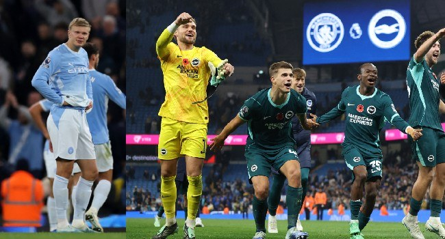

Man City Stunned In 0-1 Home Loss To Brighton

Brighton secured a 1-0 win over Manchester City at the Etihad, earning their first away victory against City in 18 attempts and moving within two points of the Premier League leaders. The result was City’s second consecutive league defeat and strengthened Brighton’s hopes of challenging near the top of the table. Arsenal could move into first place if they avoid defeat at Liverpool on Sunday.
Yasin Ayari put Brighton ahead in the 11th minute. The visitors held on through a strong second-half effort from City, with goalkeeper Bart Verbruggen making key saves. Brighton also threatened to extend their lead late on, when Jack Hinshelwood hit the side netting.
The win came after Brighton had twice led against City before losing on penalties in the League Cup on Wednesday. Brighton have also beaten champions Arsenal this season. City, meanwhile, had opened the league campaign with seven wins under Enzo Maresca, who took over from Pep Guardiola.
City’s results are also unfolding against the backdrop of their appeal over a guilty verdict concerning more than 100 alleged breaches of Premier League financial rules. If the ruling is upheld, the club could face a substantial points penalty and possible relegation.
Elsewhere, Manchester United lost 2-0 at Chelsea, extending their winless run to nine games. Morgan Rogers scored for Chelsea before Lisandro Martinez was sent off after receiving two yellow cards, conceding a penalty in the process; Cole Palmer converted. Chelsea moved into the top four. Brentford beat Nottingham Forest 2-0 to rise to sixth, Bournemouth defeated Leeds by the same score, Coventry beat Sunderland 3-1, and Hull and Ipswich drew 2-2.
Source: Channels TV